Follow the steps below to access your Outlook email for the first time and configure Microsoft Authenticator for secure sign-in.
Open Google Chrome and select New Incognito Window. This ensures no existing browser session interferes with the login.
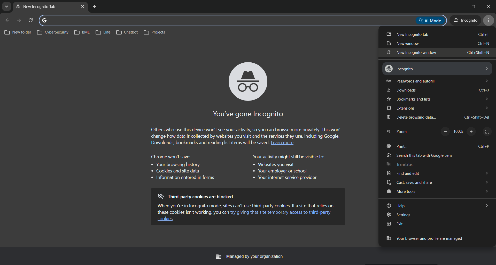
Browse to outlook.office.com and enter the email address provided by your administrator. Click Next.
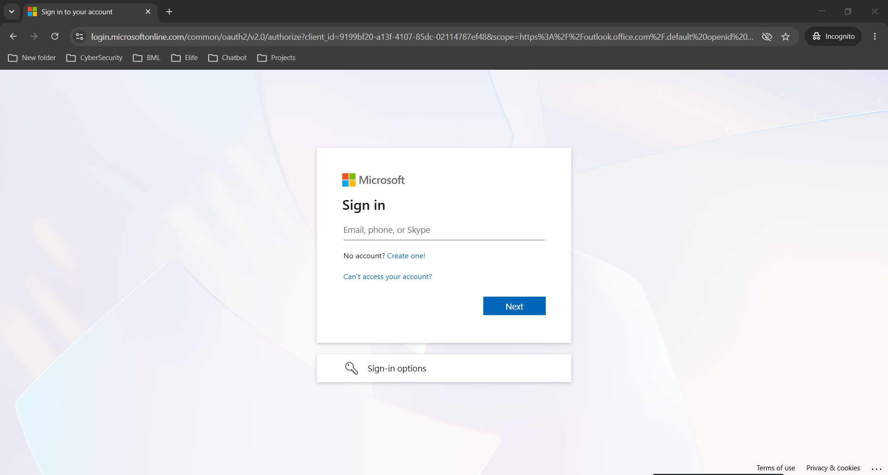
Confirm the email address shown is correct, then click Next.
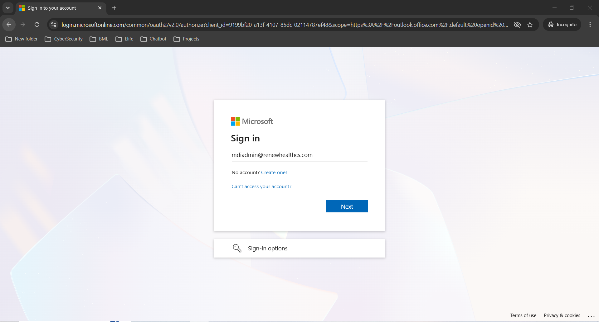
Enter the temporary password supplied by your administrator and click Sign in.
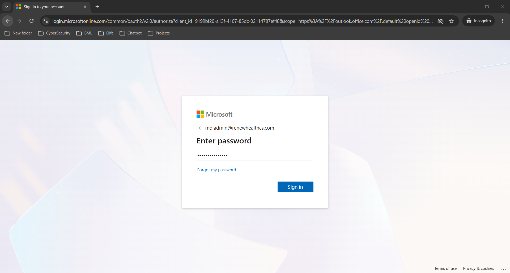
Microsoft will display a "Let's keep your account secure" prompt. Click Next to begin the multi-factor authentication setup.
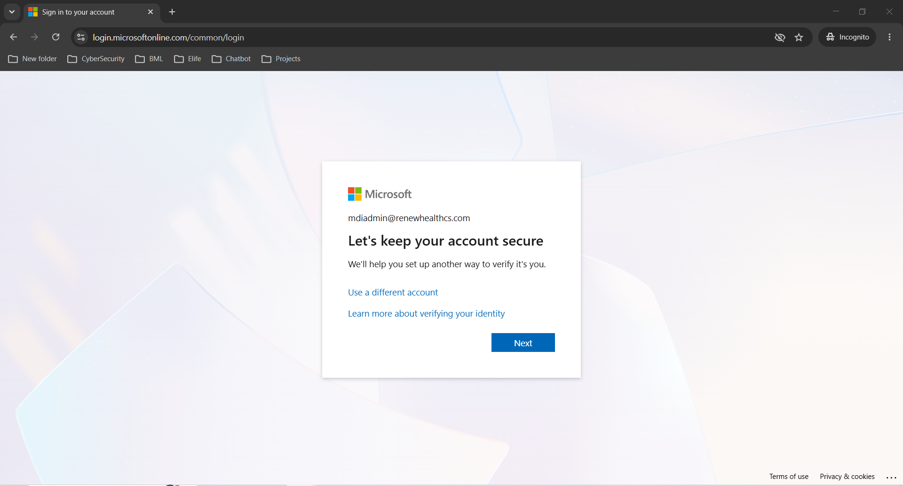
Install the Microsoft Authenticator app on your mobile device using the links shown. If already installed, select Set up a different authentication app if required, then click Next.
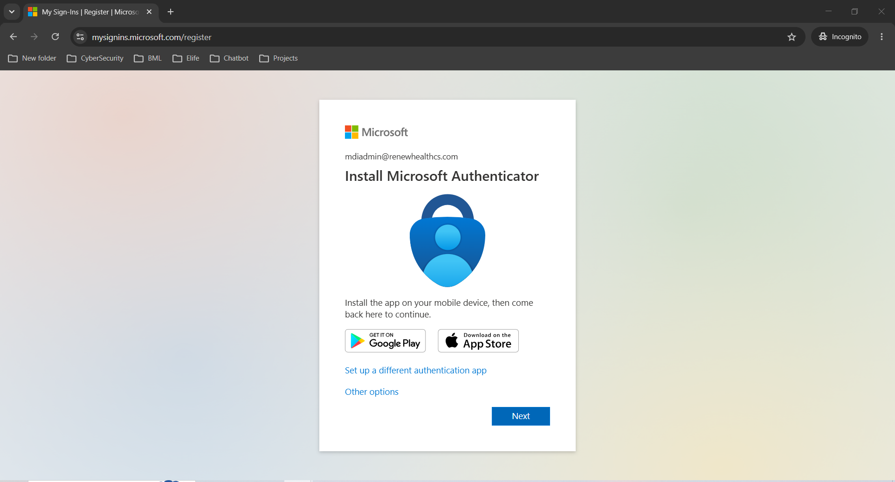
Open Microsoft Authenticator on your phone:
Then return to the browser and click Next.
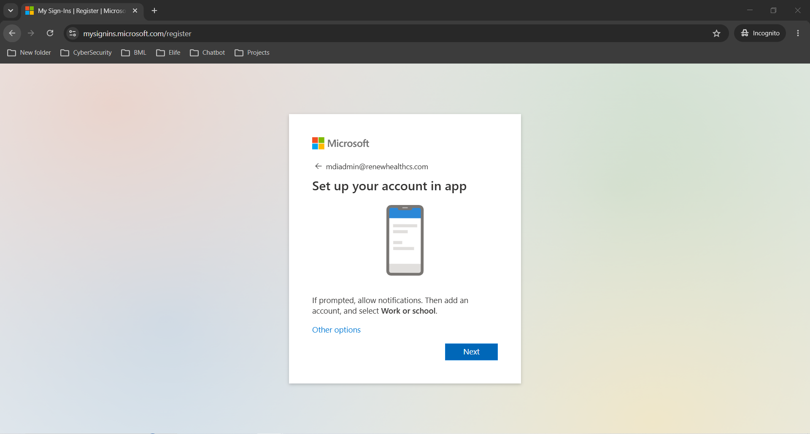
Use the Microsoft Authenticator app on your phone to scan the QR code displayed on screen. After the account is added successfully, click Next.
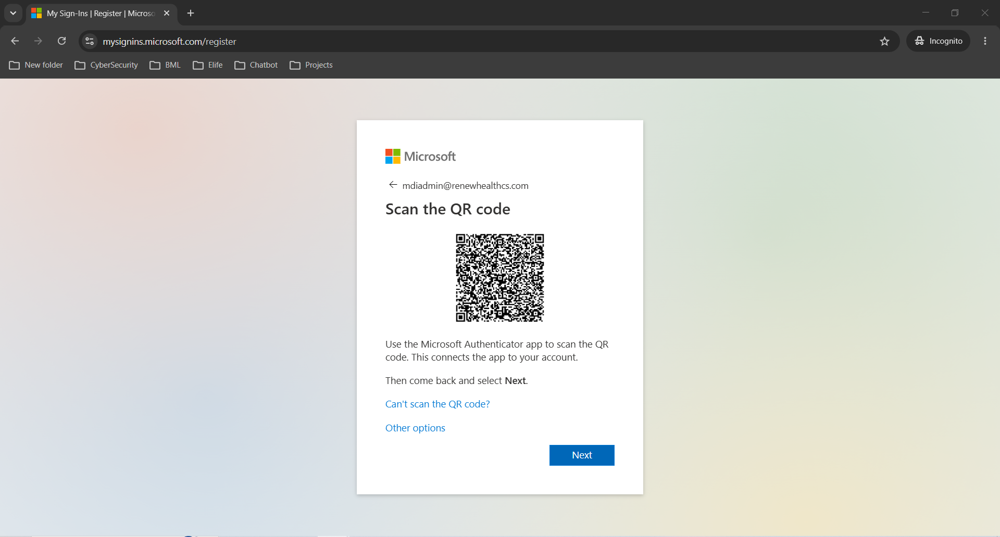
A confirmation message will appear. Click Done to continue.
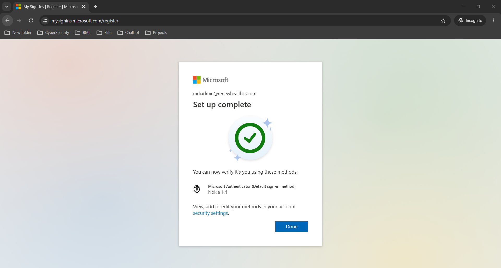
You will be required to update your password. Fill in the three fields:
Click Sign in when done.
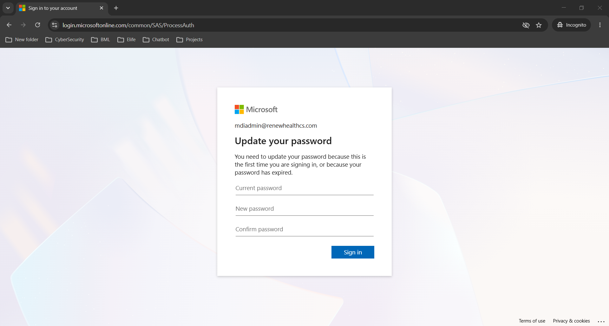
Microsoft will ask if you want to stay signed in.
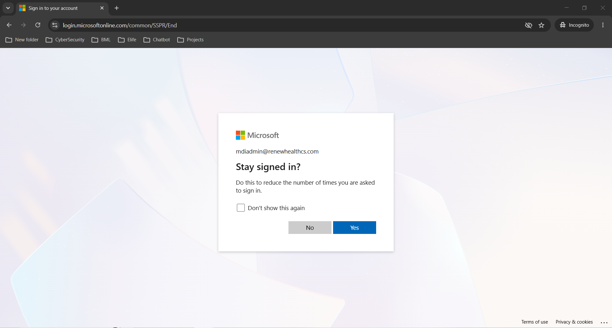
Your Outlook mailbox will open. You are now ready to send and receive emails. Setup is complete!
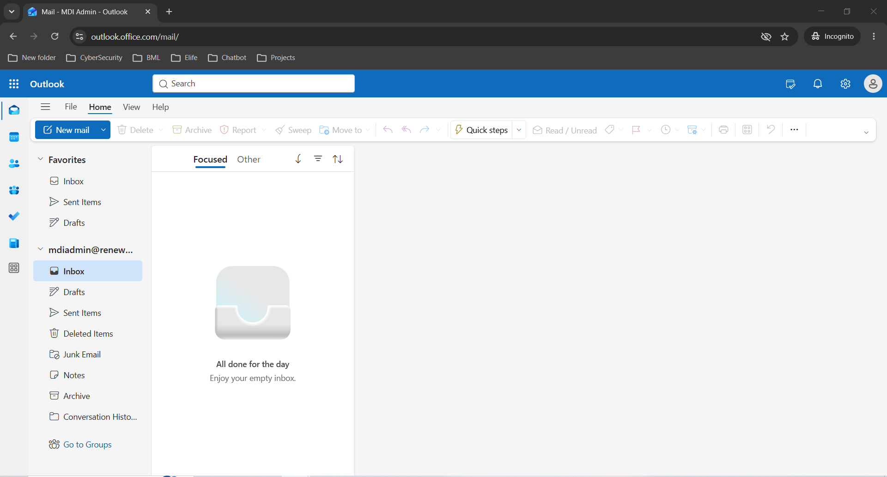